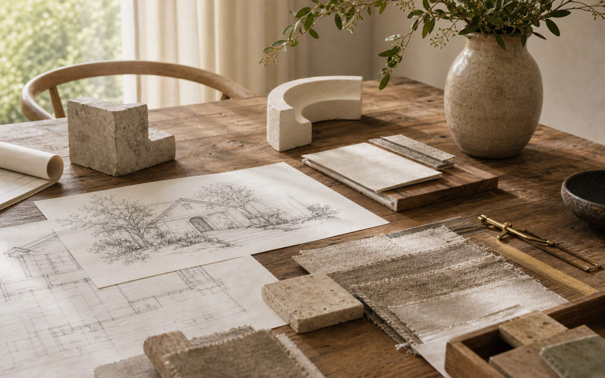
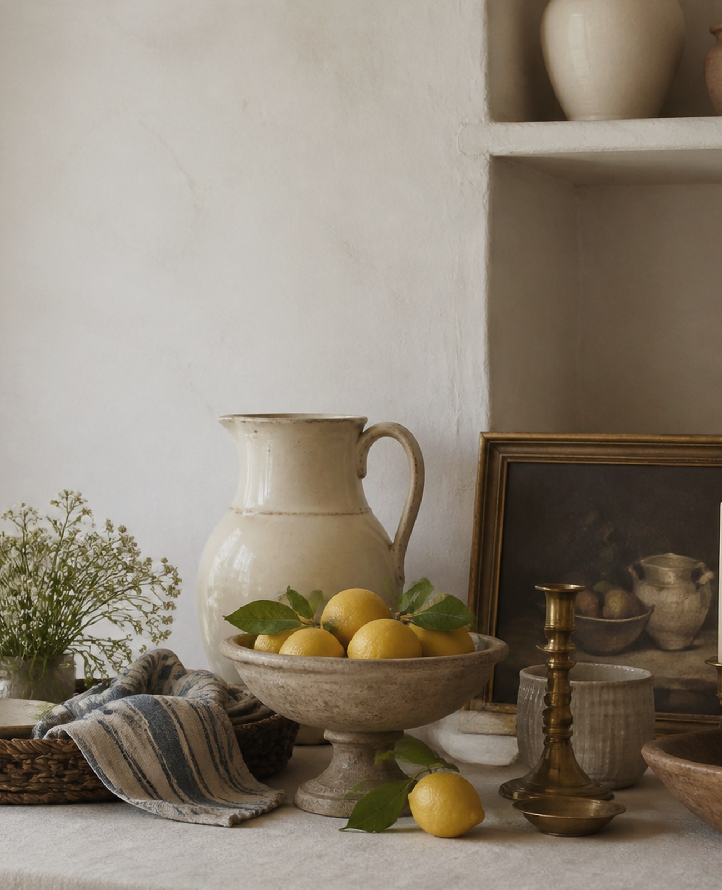
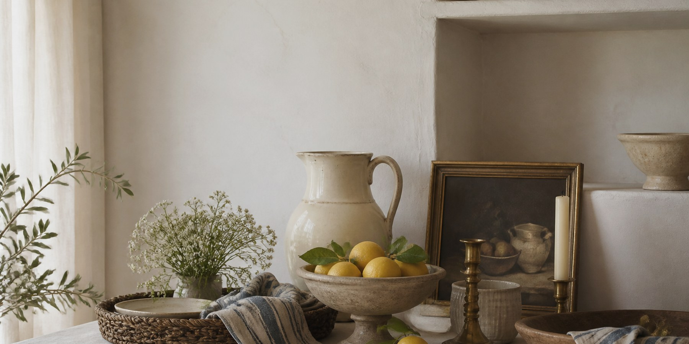
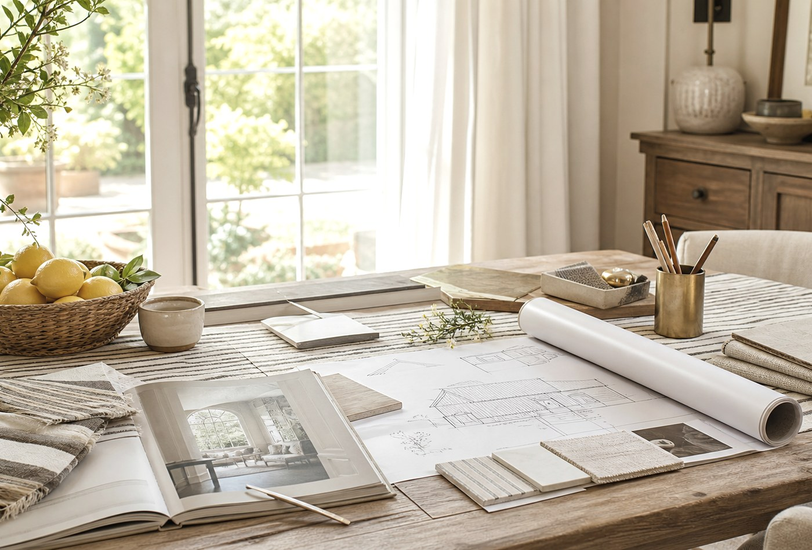

Read all

Warm and Simple

A Desert Morning Table

What Arizona Asks of a House

When a House Becomes Yours

The White Question

Finishes Without the Overwhelm

A Quiet Stripe

The Pantry List

Jayla's Lemon Pasta

What Nobody Tells First-Time Builders

The Land Comes First

The Sunday Soup

Why One Team Changes Everything

Roasted Chicken for People You Love

A Realistic Timeline

Tatum's Salsa

Hunter's Guacamole

An Arizona Margarita

Before You Sign

Before You Close on Land

The Case for Smaller

The Art of Building Beautifully

The Real Cost of Building in Arizona
Nothing too loud. Just enough notes to make a home feel more considered.